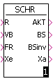

AWT FKG MAZ SCHR SEQ2 SEQ3 UST VGL3P VGLEH VGLOH VGLUH VRZ
Entsprechend dem Eingangssignal A (Auswahl) wird entweder der Eingang Xe1 oder der Eingang Xe2 auf den Ausgang Xa geschaltet.
| A | Xa |
|---|---|
| 0 | Xe1 |
| 1 | Xe2 |
| Parametername | Typ | Bedeutung |
|---|---|---|
| A | Word | Auswahl A |
| Xe1 | Float | Eingangwert Xe1 |
| Xe2 | Float | Eingangwert Xe2 |
| Xa | Float | Ausgangwert Xa |
Eine Kurve wird durch Angabe von bis zu 255 Funktionswerten angenähert. Die Stützstellen werden als Wertepaare (x- und y-Wert) angegeben und sind variabel. Zwischenwerte werden linear interpoliert, Werte jenseits des ersten bzw. letzten Stützpunktes werden auf den ersten bzw. letzten Stützpunkt bezogen.
Die Stützpunkte (Wertepaare der Form Xn, Yn) werden in einem Parameterfenster paarweise in eine Tabelle eingegeben.
| Parametername | Typ | Bedeutung |
|---|---|---|
| Xe | Float | Eingangwert Xe |
| Xa | Float | Ausgangwert Xa |
Der Variablen am Ausgang Y wird immer dann ein neuer Wert zugewiesen,
wenn der Wert der Variablen am Eingang e größer ist als der bisherige Wert
der Ausgangs-Variablen Y.
Die Variable am Ausgang Y wird auf den am Eingang X0 liegenden Anfangswert
gesetzt, wenn die Variable am Eingang S (Setzeingang) von 0- auf 1-Signal wechselt.
| Parametername | Typ | Bedeutung |
|---|---|---|
| e | Float | Eingangwert e |
| S | Float | Setzen auf Setzwert Xo |
| Xo | Float | Setzwert Xo |
| Y | Float | Ausgangwert Y |
Der Schrittbaustein ermöglicht die Organisation schrittweise ablaufender
Vorgänge. Er ist nur in zyklischen Tasks einsetzbar.
In vielen Prozessen treten schrittweise ablaufende Vorgänge auf, bei denen
jeder Schritt auf den vorangehenden logisch oder zeitlich folgt. Für die
Ablaufsteuerung dieser Vorgänge gelten folgende Festlegungen:
Der Baustein kann die zwei Zustände "Schritt aktiv" und "Schritt inaktiv" einnehmen. Der jeweils aktuelle Zustand wird am Ausgang AKT angezeigt. Im aktiven Zustand werden die Sollwert-Eingänge Xe1...Xen auf die Sollwert-Ausgänge Xa1...Xan durchgeschaltet. Im inaktiven Zustand werden die Sollwert-Ausgänge nicht verändert, d. h. sie führen weiterhin die Werte aus dem letzten aktiven Schritt.
Schritt aktiv:
Ein Schritt wird dann gesetzt, wenn der Rücksetz-Eingang R=0
ist und die UND-Verknüpfung der Eingänge VB (Vorgängerbaustein) und FR
(Freigabe) erfüllt ist.
Das Setzen des Schrittes erfolgt speichernd, d. h. der
Schritt kann nur durch Setzen von Eingang R (Rücksetzen) auf 1-Signal
zurückgesetzt werden.
Bei aktivem Schritt wird Ausgang AKT (Schritt aktiv) = 1 gesetzt. Der Eingang VB (Vorgänger-Baustein) stellt die logische Beziehung zum Vorgänger-Baustein her. An den Eingang FR (Freigabe) können weitere Aktivierungsbedingungen angeschlossen werden.
Ein gesetzter Schritt bewirkt das Durchschalten der Eingänge Xe1 bis Xen (Sollwert-Eingang) auf die Ausgänge Xa1 bis Xan (Sollwert-Ausgang), und das Setzen des Ausgangs BS (Befehl setzen) auf 1-Signal und des Ausgangs BR (Befehl rücksetzen) auf 0-Signal.
Der Ausgang BS ist beim Task-Start auf 0-Signal und geht auf 1-Signal, wenn der Ausgang AKT zum erstenmal auf 1-Signal geht. BS wird nicht durch 1-Signal am Rücksetz-Eingang R zurückgesetzt. Dies geschieht erst beim nächsten Task- oder Geräte-Neustart. Der Ausgang BR führt stets das inverse Signal zum Ausgang BS.
Schritt inaktiv:
Führt der Eingang R (Rücksetzen) 1-Signal, so wird der Baustein in den Zustand
"Schritt inaktiv" überführt. Bei inaktivem Schritt geht
der Ausgang AKT auf 0-Signal. Die Ausgänge BS (Befehl setzen), BR (Befehl
rücksetzen) sowie SA1 bis SAn (Sollwert-Ausgang) werden bei inaktivem
Schritt nicht verändert.
Bei Widersprüchen (Eingänge VB, FR und R gleichzeitig auf 1-Signal) ist der Rücksetzeingang R dominant.
Der Schrittbaustein kann 0 bis maximal 0xFF Ein-/Ausgänge haben.
|  |
| R | AKT Vorgänger | VB | FR | AKT | Xa (1-15) |
|---|---|---|---|---|---|
| 0 | 0 | 0 | 0 | 0 | nicht bedient |
| 0 | 0 | 0 | 1 | 0 | nicht bedient |
| 0 | 0 | 1 | 0 | 0 | nicht bedient |
| 0 | 0 | 1 | 1 | 1 | Xe wird auf Xa geschaltet |
| 0 | 1 | 0 | 0 | 1 | Xe wird auf Xa geschaltet |
| 0 | 1 | 0 | 1 | 1 | Xe wird auf Xa geschaltet |
| 0 | 1 | 1 | 1 | 1 | Xe wird auf Xa geschaltet |
| 1 | - | - | - | 0 | nicht bedient |
| R | BS Vorgänger | VB | FR | BS | BR |
|---|---|---|---|---|---|
| 0 | 0 | 0 | 0 | 0 | 1 |
| 0 | 0 | 0 | 1 | 0 | 1 |
| 0 | 0 | 1 | 0 | 0 | 1 |
| 0 | 1 | 1 | 1 | 1 | 0 |
| 0 | 1 | 0 | 0 | 1 | 0 |
| 0 | 1 | 0 | 1 | 1 | 0 |
| 0 | 1 | 1 | 0 | 1 | 0 |
| 0 | - | 1 | 1 | 1 | 0 |
| 1 | - | - | - | 1 | 0 |
| Parametername | Typ | Bedeutung |
|---|---|---|
| R | Word | Rücksetzeingang |
| VB | Word | Vorbedingung |
| FR | Word | Freigabe |
| Xe | Float | Eingangswert Xe (1-15) |
| AKT | Word | Aktiv |
| BS | Word | Befehl setzen |
| BSinv | Word | Befehl setzen invers |
| Xa | Float | Ausgangwert Xa (1-15) |
Mit diesem Baustein kann eine zweifache Sequenz (z. B. Entfeuchten und Befeuchten) realisiert werden. Die Kennlinien sind dabei jeweils bereichsweise linear. Steigung und Lage der beiden Funktionen werden bestimmt durch die beiden Eingangs-Werte X1 (untere Grenze der Totzone) und H (Breite der Totzone).
Der Ausgangswert Y1 fällt linear von Y1=100% bei X=0% bis Y1=0% bei X=X1 und
bleibt dann auf 0%.
Der Ausgangswert Y2 besitzt den Wert 0 % von X=0% bis zur Stelle X = X1+H und
steigt dann linear bis zum Endwert Y2=100% bei X=100%.
Zusätzlich beinhaltet der Baustein noch einen Vergleicher ohne Hysterese mit dem Schwellwert P. Der Ausgang S führt 1-Signal falls Xe größer oder gleich P ist, sonst ist S=0.
Einschränkungen:
| Parametername | Typ | Bedeutung |
|---|---|---|
| Xe | Float | Eingangswert 0%-100% |
| X1 | Float | Grenzwert X1 (Beginn Totzone) |
| H | Float | Hysterese (Breite der Totzone) |
| P | Float | Vergleichswert P |
| Y1 | Float | Ausgangswert Y1 |
| Y2 | Float | Ausgangswert Y2 |
| S | Word | Schaltausgang S |
Mit diesem Baustein kann eine dreifache Sequenz (z. B. zur Temperatur-
Regelung) realisiert werden. Deshalb sind Ausgänge vorgesehen für
Die Kennlinien sind dabei jeweils bereichsweise linear. Steigung und Lage der Funktionen werden bestimmt durch die beiden Eingangspaare X1/H1 (untere Grenze der unteren Totzone/Breite der unteren Totzone) und X2/H2 (untere Grenze der oberen Totzone/Breite der oberen Totzone).
Die Funktion Y1 fällt linear von Y1=100% bei X=0% bis Y1=0% bei X=X1 und
bleibt dann auf 0%.
Die Funktion Y2 besitzt den Wert 0% von X=0% bis zur Stelle X=X1+H1, steigt
dann linear bis zum Endwert Y2=100% bei X=X2 und bleibt dann 100% bis X=100 %.
Die Funktion Y3 besitzt den Wert 100% von X=0% bis zur Stelle X=X1+H1,
fällt dann linear bis zum Wert Y3=YMIN bei X=X2 und bleibt dann auf dem Wert
YMIN bis X=100%.
Die Funktion Y4 besitzt den Wert 0% von X=0% bis zur Stelle X=X2+H2, steigt
dann linear bis zum Endwert Y4=100% bei X=100%.
Zusätzlich beinhaltet der Baustein noch zwei Vergleicher ohne Hysterese mit den Schwellwerten P1 bzw. P2. Der zugehörige Ausgang S1 bzw. S2 ist 1, falls X größer oder gleich P1 bzw. P2 ist, sonst ist S1 bzw. S2=0.
Der Eingang SW kann zur Sommer-/Winter-Umschaltung benutzt werden. Ist SW=1 so werden die Funktionen Y2 und Y3 an der Geraden X=(X1+H1)+(X2-(X1+H1))/2 gespiegelt.
Einschränkungen:
| Parametername | Typ | Bedeutung |
|---|---|---|
| Xe | Float | Eingangswert 0%-100% |
| X1 | Float | Grenzwert X1 (Beginn Totzone 1) |
| H1 | Float | Hysterese 1 (Breite der Totzone 1) |
| X2 | Float | Grenzwert X2 (Beginn Totzone 2) |
| H2 | Float | Hysterese 2 (Breite der Totzone 2) |
| P1 | Float | Vergleichswert P1 |
| P2 | Float | Vergleichswert P2 |
| YMIN | Float | Minimalwert für Y3 |
| SW | Word | Sommer-Winter-Umschaltung SW |
| Y1 | Float | Ausgangswert Y1 z.B. Kühlerventil |
| Y2 | Float | Ausgangswert Y2 z.B. Umluftklappe/WRG |
| Y3 | Float | Ausgangswert Y3 z.B. Aussenluftklappe mit Min.-Begrenzung |
| Y4 | Float | Ausgangswert Y4 z.B. Erhitzerventil |
| S1 | Word | Schaltausgang S1 |
| S2 | Word | Schaltausgang S2 |
Entsprechend dem Eingang "Wahl" (Umschalt-Signal) wird das Signal am Eingang Xe auf den Ausgang Xa1 oder den Ausgang Xa2 geschaltet.
| Wahl | Ausgang |
|---|---|
| 0 | Xa1 = Xe |
| 1 | Xa2 = Xe |
| Parametername | Typ | Bedeutung |
|---|---|---|
| Wahl | Word | Umschaltsignal |
| Xe | Float | Eingangssignal |
| Xa1 | Float | Ausgangssignal Xa1 = Xe, wenn Wahl = 0 |
| Xa2 | Float | Ausgangssignal Xa2 = Xe, wenn Wahl = 1 |
Der Wert der am Eingang Xe liegenden Variablen wird mit den Werten der am Eingang oGrenze (oberer Grenzwert) und der am Eingang uGrenze (unterer Grenzwert) liegenden Variablen verglichen. Der Vergleicher hat folgendes Verhalten :
Voraussetzung:
Der am Eingang uGrenze liegende Wert muß immer kleiner sein als der am Eingang
oGrenze liegende Wert!
| Eingang | Ausgang Ygr | Ausgang Ykl | Ausgang Ymi |
|---|---|---|---|
| Xe > oGrenze | 1 | 0 | 0 |
| Xe < uGrenze | 0 | 1 | 0 |
| uGrenze < Xe < oGrenze | 0 | 0 | 1 |
| Parametername | Typ | Bedeutung |
|---|---|---|
| Xe | Float | Eingangssignal |
| oGrenze | Float | Oberer Grenzwert |
| uGrenze | Float | Unterer Grenzwert |
| Ygr | Word | Ausgangssignal Ygr, wenn Xe > oGrenze |
| Ykl | Word | Ausgangssignal Ykl, wenn Xe < uGrenze |
| Ymi | Word | Ausgangssignal Ymi, wenn uGrenze < Xe < oGrenze |
Ist der am Eingang Xe liegende Wert gleich oder größer als der am Eingang Grenze
liegende Vergleichswert, so geht der Ausgang Y auf 1-Signal.
Ist der am Eingang Xe liegende Wert kleiner als der Vergleichswert "Grenze" abzüglich dem am
Eingang "Hyst" (Hysterese) liegenden Wert, so geht der Ausgang Y auf 0-Signal.
Andernfalls behält der Ausgang Y den alten Wert.
Hinweis:
Der Wert am Eingang Hyst muß immer größer als 0 sein!
| Eingang | Ausgang Y |
|---|---|
| Xe > Grenze | 1 |
| Xe < Grenze - Hyst | 0 |
| Grenze - Hyst < Xe < Grenze | alter Wert |
| Parametername | Typ | Bedeutung |
|---|---|---|
| Xe | Float | Eingangssignal |
| Grenze | Float | Grenzwert |
| Hyst | Float | Hysterese |
| Y | Word | Ausgangssignal Y |
Ist der Wert der Variablen am Eingang Xe kleiner als der Wert der Variablen am Eingang "Grenze" (Vergleichswert), so ist der Ausgang Xa auf 0-Signal, anderenfalls ist er auf 1-Signal.
| Eingang Xe | Ausgang Xa |
|---|---|
| Xe > Grenze | 1 |
| Xe < Grenze | 0 |

| Parametername | Typ | Bedeutung |
|---|---|---|
| Xe | Float | Eingangssignal |
| Grenze | Float | Grenzwert |
| Xa | Word | Ausgangssignal Xa |
Ist der Wert der am Eingang Xe liegenden Variablen gleich oder größer als der
Wert der am Eingang "Grenze" (Vergleichswert) liegenden Variablen zuzüglich dem
Wert der am Eingang oHyst (obere Hystere) liegenden Variablen, so geht der
Ausgang Xa auf 1-Signal.
Ist der Wert der am Eingang Xe liegenden Variablen
kleiner als der Wert der am Eingang "Grenze" liegenden Variablen abzüglich dem
Wert der am Eingang "uHyst" (untere Hysterese) liegenden Variablen, so geht der
Ausgang Xa auf 0-Signal, anderenfalls behält er den alten Wert.
Voraussetzung:
Die Werte der an den Eingängen uHyst und oHyst liegenden Variablen müssen
stets größer als 0 sein.
| Eingang Xe | Ausgang Xa |
|---|---|
| Xe > Grenze + oHyst | 1 |
| Xe < Grenze - uHyst | 0 |
| Grenze - uHyst < Xe < Grenze + oHyst | alter Wert |
| Parametername | Typ | Bedeutung |
|---|---|---|
| Xe | Float | Eingangssignal |
| Grenze | Float | Grenzwert |
| oHyst | Float | Obere Hysterese |
| uHyst | Float | Untere Hysterese |
| Xa | Word | Ausgangssignal Xa |
Der Vorwärts-Rückwärts-Zähler besitzt Eingänge für
Der am Ausgang dieses Bausteins liegende Zählwert darf nicht in die Prozeß- Datenbank übertragen werden, da diese nur Vorwärtszähler kennt!
| Parametername | Typ | Bedeutung |
|---|---|---|
| R | Word | Rücksetzen |
| Delta | Float | Zähldifferenz |
| S | Word | Setzen |
| Setzwert | Float | Setzwert |
| Freigabe | Word | Freigabe des Zählers |
| Auf | Word | Vorwärts Zählen |
| Ab | Word | Rückwärts Zählen |
| Xa | Float | Zählwert |
WISAG Automatisierungstechnik GmbH & Co. KG
Ohmweg 11-15, D-68199 Mannheim
Stand: 04.02.2011 - Bearbeiter: HJ Werder